El menú principal se ve en inglés.
Esperado: Ningún texto del menú principal queda en español.
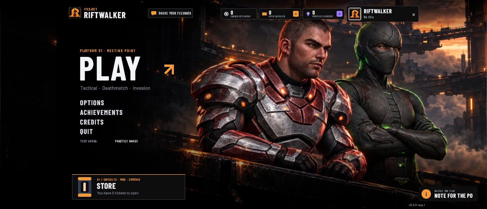
Prueba US347_CA1_Menu_principal: Passed
Corrida del 15/11/2026 sobre develop, con el juego en inglés. Cada caso tiene la captura de su pantalla y la lista de textos que se veían, generadas por las pruebas automáticas (IdiomaEnPantallaTests); la prueba falla si queda algún texto en español. US 349 lo revisan el validador del catálogo y TraduccionesCompletasTests. Los números de TC son los del plan de pruebas del Sprint 5.
Para volver a generarla: tools/localization/pruebas-idiomas.ps1, o en el Test Runner las categorías US 347, US 348 y US 349. Los carteles reales del mapa de la UNGS quedan en español a propósito.
El menú principal se ve en inglés.
Esperado: Ningún texto del menú principal queda en español.

Prueba US347_CA1_Menu_principal: Passed
Opciones se ve en inglés en todas sus pestañas.
Esperado: Ninguna pestaña de Opciones tiene textos en español.
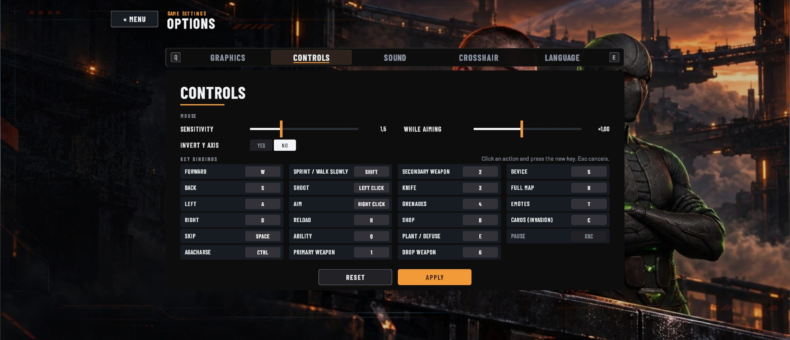
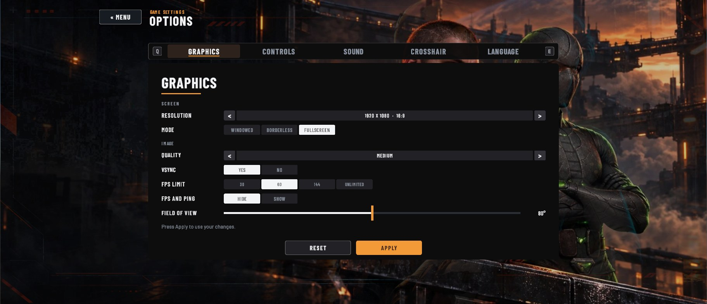
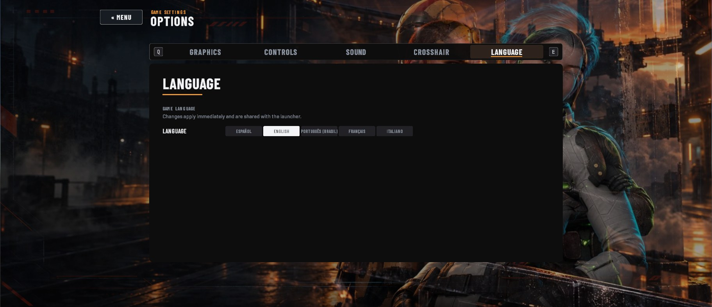
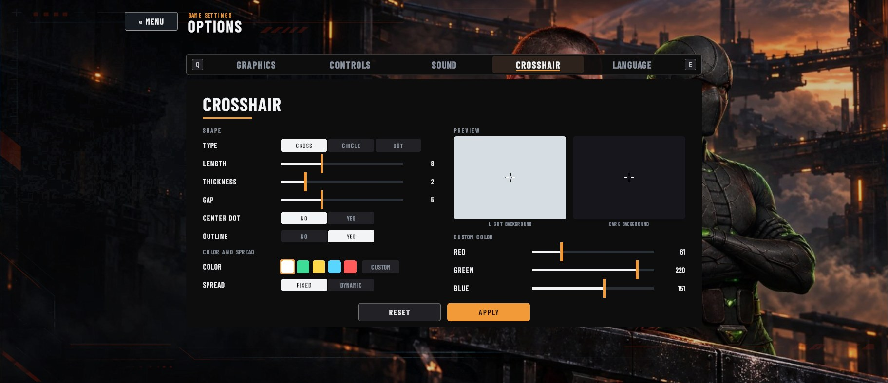
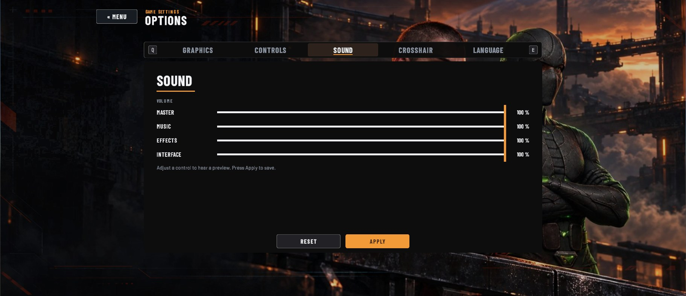
Prueba US347_CA2_Opciones: Passed
El Perfil se ve en inglés.
Esperado: Ningún texto del Perfil queda en español.
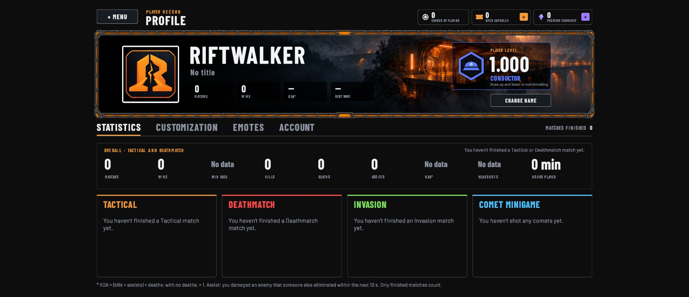
Prueba US347_CA3_Perfil: Passed
Logros se ve en inglés.
Esperado: Ningún texto de Logros queda en español.
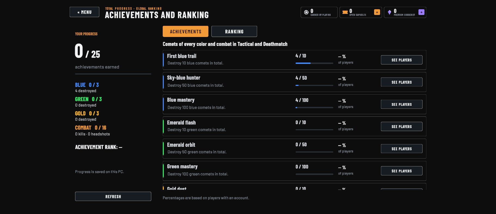
Prueba US347_CA4_Logros: Passed
La Estación del Rift y la Tienda se ven en inglés.
Esperado: Ningún texto de la Estación ni de la Tienda queda en español.
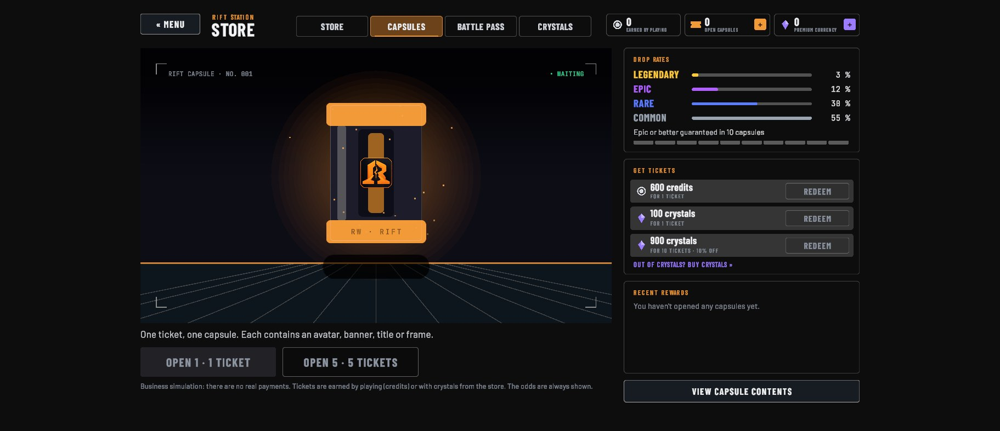
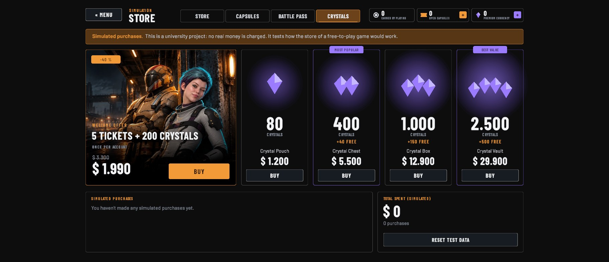
Prueba US347_CA5_Estacion_y_Tienda: Passed
La selección de modo se ve en inglés.
Esperado: Ningún texto de la selección de modo queda en español.
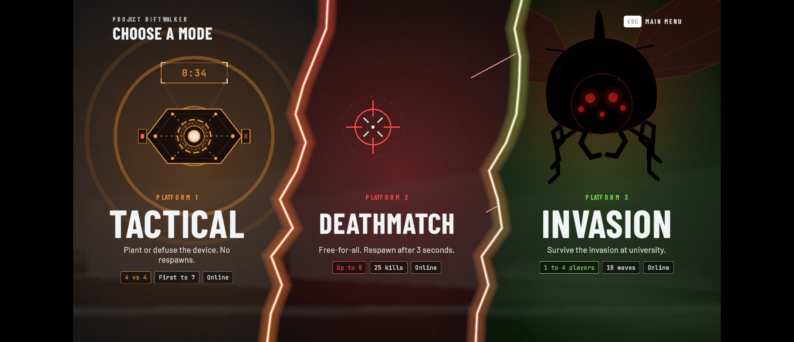
Prueba US347_CA6_Seleccion_de_modo: Passed
Los créditos se ven en inglés, salvo los nombres del equipo.
Esperado: Roles y títulos en inglés; solo quedan los nombres del equipo.
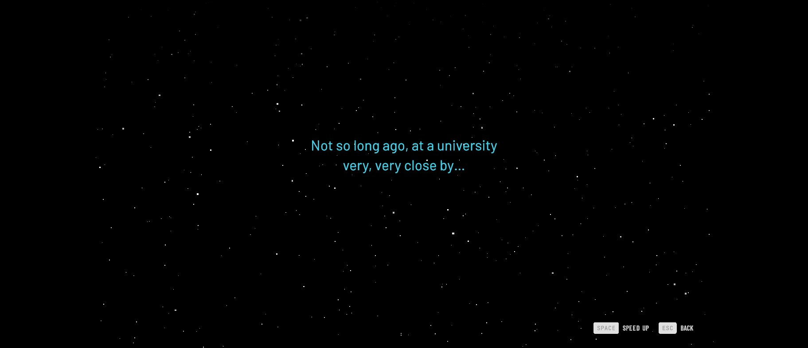
Prueba US347_CA7_Creditos: Passed
El menú de pausa se ve en inglés.
Esperado: Ningún texto del menú de pausa queda en español.
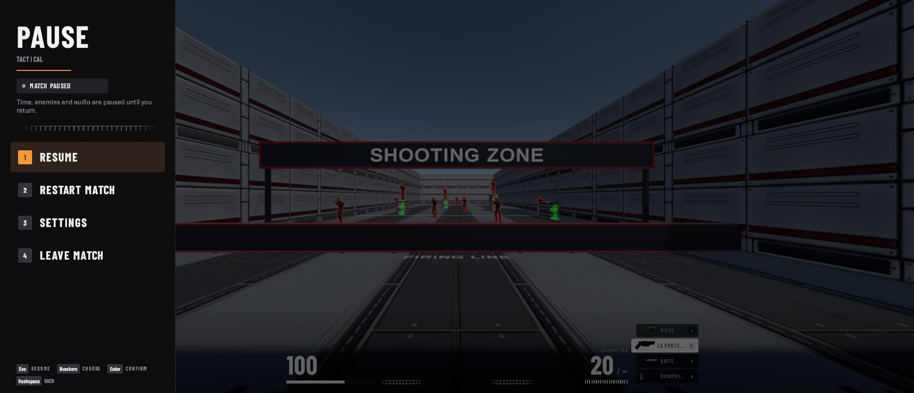
Prueba US347_CA8_Pausa: Passed
En Invasión, el HUD y el anuncio de la oleada se ven en inglés.
Esperado: El HUD y el anuncio de la oleada están en inglés.
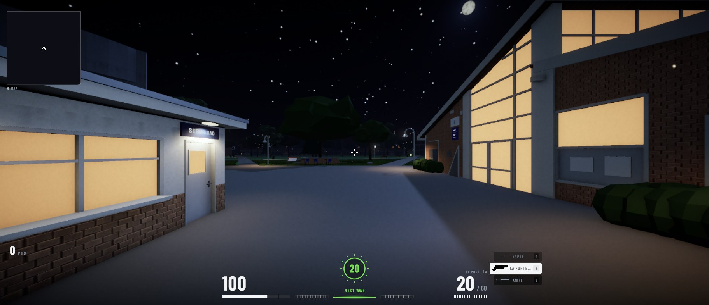
Prueba US348_CA1_Invasion_HUD_y_oleada: Passed
La elección del puesto de suministros se ve en inglés: nombres de las cartas, efectos, rareza y "rinde con".
Esperado: Nombres, efectos, rarezas y "rinde con" de las cartas en inglés.
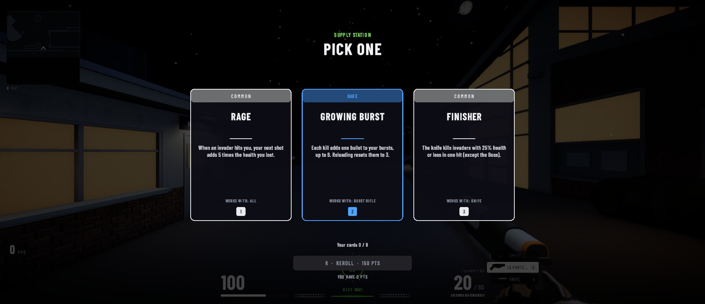
Prueba US348_CA2_Invasion_eleccion_de_cartas: Passed
La pantalla de resultado de Invasión se ve en inglés.
Esperado: Títulos, números y botones del resultado en inglés.
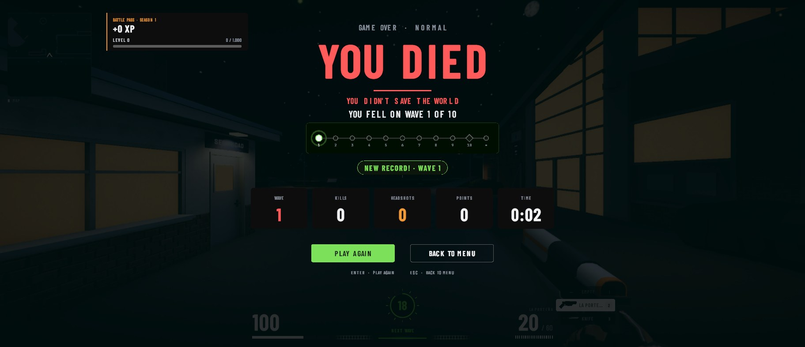
Prueba US348_CA3_Invasion_resultado: Passed
En Deathmatch, el marcador y la tabla se ven en inglés.
Esperado: El marcador y los textos de la partida están en inglés.
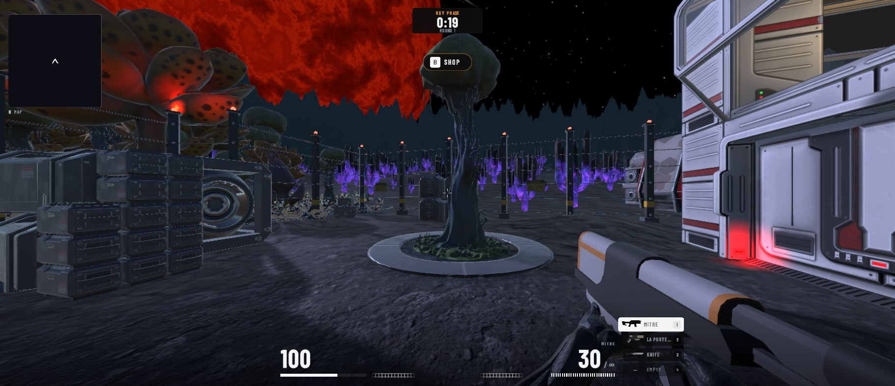
Prueba US348_CA4_Deathmatch: Passed
En el modo Táctico, el marcador y la fase de compra se ven en inglés.
Esperado: El marcador y la fase de compra están en inglés.
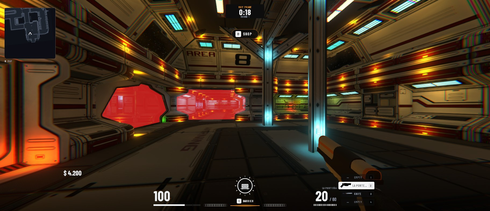
Prueba US348_CA5_Tactico: Passed
En el campo de práctica, el tutorial y la tienda se ven en inglés.
Esperado: El tutorial y la tienda están en inglés.
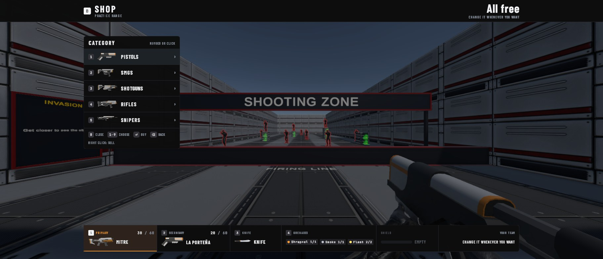
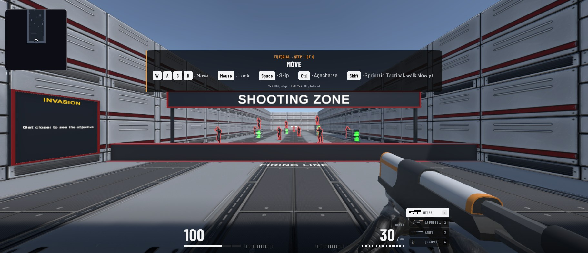
Prueba US348_CA6_Practica_tutorial_y_tienda: Passed
Cada texto en español tiene su versión en inglés, y ninguna está vacía.
Esperado: No falta ninguna clave y ninguna traducción está vacía.
Prueba US349_CA1_Todo_texto_tiene_traduccion: Passed
Archivos: US-349_validador.txt unity-editmode.txt
Localization complete: 1789 keys × 5 locales; no missing values, duplicate keys or placeholder mismatches.
Pruebas EditMode TraduccionesCompletasTests · 15/11/2026 18:16 PASS US349_CA1_Todo_texto_tiene_traduccion PASS US349_CA2_Datos_insertados_iguales PASS US349_CA3_Sin_textos_en_espanol_en_el_codigo PASS US350_CA6_Misma_frase_misma_traduccion 4/4 passed · Passed
Los datos que se insertan en un texto (números, nombres, teclas: {0}, {1:00}) son los mismos en los dos idiomas.
Esperado: Todos los textos tienen los mismos datos insertados en cada idioma.
Prueba US349_CA2_Datos_insertados_iguales: Passed
Archivos: unity-editmode.txt
Pruebas EditMode TraduccionesCompletasTests · 15/11/2026 18:16 PASS US349_CA1_Todo_texto_tiene_traduccion PASS US349_CA2_Datos_insertados_iguales PASS US349_CA3_Sin_textos_en_espanol_en_el_codigo PASS US350_CA6_Misma_frase_misma_traduccion 4/4 passed · Passed
Si alguien escribe en el código un texto en español que ve el jugador sin pasarlo por el catálogo, la prueba falla y dice en qué archivo está.
Esperado: El escáner no encuentra textos en español nuevos sin traducir.
Prueba US349_CA3_Sin_textos_en_espanol_en_el_codigo: Passed
Archivos: US-349_CA3_Escaner.txt unity-editmode.txt
Pruebas EditMode TraduccionesCompletasTests · 15/11/2026 18:16 PASS US349_CA1_Todo_texto_tiene_traduccion PASS US349_CA2_Datos_insertados_iguales PASS US349_CA3_Sin_textos_en_espanol_en_el_codigo PASS US350_CA6_Misma_frase_misma_traduccion 4/4 passed · Passed